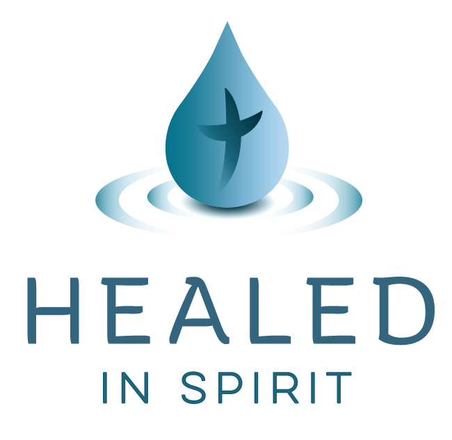

By using this app, you agree to the terms set forth in this agreement.
If you are taking prescribed medications prior to using this app, you agree to continue taking those prescribed medications until released from doing so by the medical professional who prescribed it.
You agree that Healed In Spirit is a ministry of Global Arc, a non-profit corporation. You agree to hold Healed In Spirit and its team members harmless and free from any and all liability, loss or damage of any kind that may arise as a result of using this app.
You agree that using this app is not professional counseling and that none of the team members are professional counselors.
You agree that you have voluntarily sought assistance of your own initiative and that you are under no obligation to accept or reject any of the tools and advice or help you might receive from Healed In Spirit and it's tools, materials and apps.